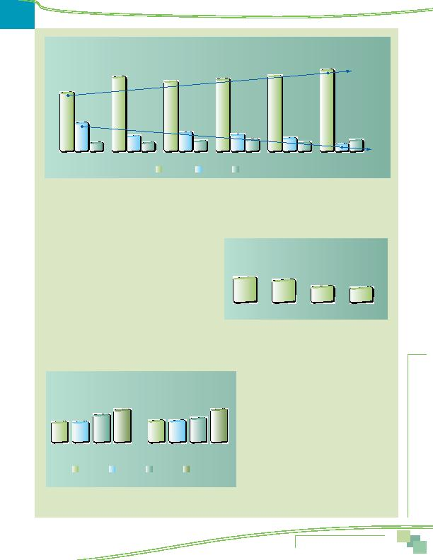

MWCOG-Comm
uter Conn
ecti
on
s-- 2010 State o
f th
e Comm
ute Report
2 9
These commuters shift almost entirely to driving alone. As the figure shows, the drive alone rate for commuters who live more
than 10 miles from a bus stop is 81%, compared to 58% for commuters who live within one-half mile of a bus stop. This represents
a 23 percentage point increase for driving alone. Use of carpool/vanpool remains fairly constant at all bus access distances.
HIGH OCCUPANCY VEHICLE (HOV) AND HIGH OCCUPANCY TOLL (HOT) LANES
Availability and Use of HOV Lanes
The survey also examined the availability and use of High
Occupancy Vehicle (HOV) lanes. Three in ten (30%) of the respon-
dents who commuted one or more days per week said there was
a special HOV lane along their route to work. Of these commut-
ers, 27% said they used these lanes. This equated to about nine
percent of commuters region-wide. These percentages of HOV avail-
ability and HOV use were essentially the same as reported in 2007.
Respondents who regularly used the HOV lane for commuting
estimated that using the lane saved them an average of 23 min-
utes for each one-way trip. As displayed in Figure 21, a third (33%) said they saved 10 minutes or less and three in ten (30%)
saved between 11 and 20 minutes. The remaining HOV users were evenly split between savings of 21 to 30 minutes (20%) and
saving more than 30 minutes one-way (17%).
HOV Lanes by Home Area
Figure 22 shows
availability and use of HOV lanes by respondents'
home location within the three "ring" categories.
Commuters who lived in Middle Ring and Outer Ring
jurisdictions were more likely to say they have HOV
lanes available on their route to work than were
commuters who lived in the Inner Core.
Commuters who lived in the Outer Ring used
HOV lanes at a higher rate than did commuters in
other areas. Nearly four in ten (39%) Outer Ring
respondents who had access to HOV lanes said they
used them, compared to about a quarter of Inner
Core and Middle Ring respondents.
7%
74%
13%
7%
17%
8%
14%
10%
75%
11%
8%
81%
+23%
6%
-21%
9%
27%
72%
Figure 20
Commute Mode by Distance from Home to Bus Stop
Drive alone
58%
Bus/Train
Carpool/Vanpool
Less than 0.5 mi
0.50.9 mi
1.02.9 mi
3.0-4.9
5.0-9.9
10 mi or more
69%
Figure 21
Travel Time Savings of HOV Users
10 min or less
11-20 min
21-30 min
31 min or more
33%
30%
20%
17%
39%
33%
23%
Figure 22
Availability and Use of HOV Lanes by Home Area
Region Wide
HOV Available
23%
39%
27%
25%
Used HOV
25%
Inner Core
Middle Ring
Outer Ring
Availability of and Attitudes Toward
Transportation Options